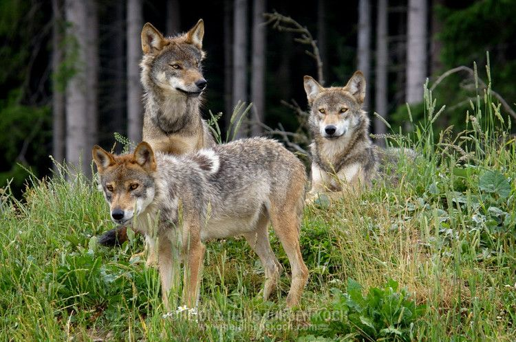

Biodiversity conservation: EU measures
In May 2020, the European Commission launched the EU Biodiversity Strategy 2030, which aims to address the main drivers of biodiversity loss by protecting and restoring biodiversity while promoting environmental, economic, and social change. During its June 2021 plenary session, the European Parliament (EP) adopted its position on the EU Biodiversity Strategy 2030 and emphasized the need for coordinated implementation with other Green Deal strategies. The EP stressed the importance of biodiversity and the urgent need for action. One of the key targets outlined in the 2030 Biodiversity Strategy is the establishment of an EU nature restoration plan. MEPs believe that such a plan is essential and called for at least 30% of the EU's land and seas to be designated as protected areas by 2030. They further emphasized the need for stringent protection measures for a third of these areas, including the remaining primary forests and ancient woodlands. In addition to nature restoration, MEPs also highlighted the critical issue of insect pollinator decline. They emphasized that the decline of insect pollinators not only poses a threat to biodiversity but also jeopardizes food security. MEPs called for an urgent review of the EU's initiative on insect pollinators and stressed the importance of implementing a new EU monitoring system with strong measures, clear targets, and indicators. The report also recognized the benefits of urban greening in supporting biodiversity. MEPs expressed support for the creation of an EU Urban Greening Platform and urged the Commission to set specific and ambitious targets for enhancing urban biodiversity. Regarding agriculture, MEPs welcomed the 2030 target of allocating 25% of agricultural land for organic farming. They also expressed support for the Commission's reduction targets to minimize the impact of agriculture on biodiversity. Overall, the EU Biodiversity Strategy 2030 and the EP's position on it underscore the importance of protecting and restoring biodiversity, addressing the decline of pollinators, enhancing urban biodiversity, and promoting sustainable agricultural practices. These efforts aim to safeguard biodiversity, ensure food security, and contribute to a more sustainable and resilient future.
Continue to the original article